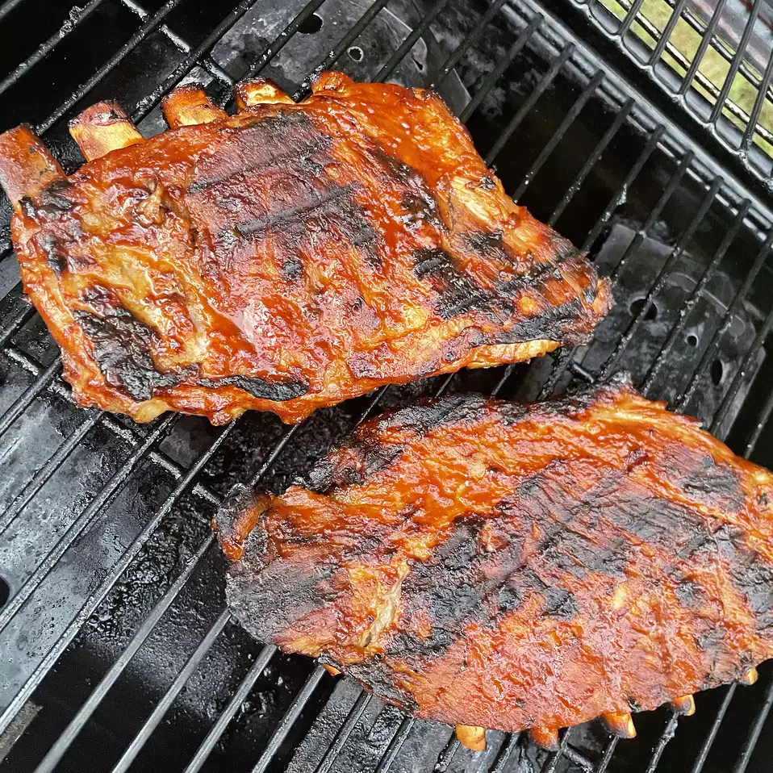

BBQ Ribs

BBQ Ribs
Hello and welcome to Simple Awesome Recipes. Today we will be grilling delicious and easy BBQ Ribs.
Please be sure to check out the recipe below and be sure to subscribe for more awesome recipes daily!
Ingredients
- 4 pounds baby back pork ribs
- ⅔ cup water
- ⅓ cup red wine vinegar
- 1 cup ketchup
- 1 cup water
- 1/2 C cider vinegar
- 1/3 C Worcestershire sauce
- 1/4 C Mustard
- 4 Tbsp butter
- 1/2 C brown sugar
- 1 tsp hot pepper sauce
- 9 ounces Alfredo-style pasta sauce
- 1/8 tsp salt
Steps
- Preheat oven to 350 degrees F (175 degrees C). Place ribs in two 10x15 inch roasting pans. Pour water and red wine vinegar into a bowl, and stir. Pour diluted vinegar over ribs and cover with foil. Bake in the preheated oven for 45 minutes. Baste the ribs with their juices halfway through cooking.)
- In a medium saucepan, mix together ketchup, water, vinegar, Worcestershire sauce, mustard, butter, brown sugar, hot pepper sauce, and salt; bring to a boil. Reduce heat to low, cover, and simmer barbeque sauce for 1 hour.
- Preheat grill for medium heat.
- Lightly oil preheated grill. Transfer ribs from the oven to the grill, discarding cooking liquid. Grill over medium heat for 15 minutes, turning ribs once. Baste ribs generously with barbeque sauce, and grill 8 minutes. Turn ribs, baste again with barbeque sauce, and grill 8 minutes..